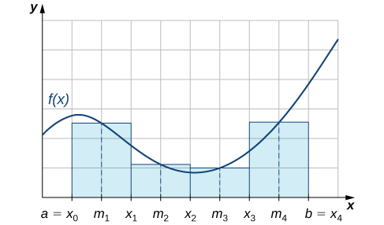
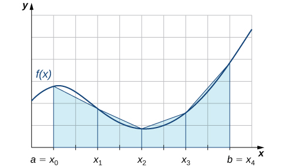

The antiderivatives of many functions either cannot be expressed or cannot be expressed easily in closed form (that is, in terms of known functions). Consequently, rather than evaluate definite integrals of these functions directly, we resort to various techniques of numerical integration to approximate their values. In this section we explore several of these techniques. In addition, we examine the process of estimating the error in using these techniques.
The Midpoint Rule
Earlier in this text we defined the definite integral of a function over an interval as the limit of Riemann sums. In general, any Riemann sum of a function over an interval may be viewed as an estimate of Recall that a Riemann sum of a function over an interval is obtained by selecting a partition
and a set
The Riemann sum corresponding to the partition and the set is given by where the length of the ith subinterval.
The midpoint rule for estimating a definite integral uses a Riemann sum with subintervals of equal width and the midpoints, of each subinterval in place of Formally, we state a theorem regarding the convergence of the midpoint rule as follows.
The Midpoint Rule
Assume that is continuous on Let n be a positive integer and If is divided into subintervals, each of length and is the midpoint of the ith subinterval, set
Then
As we can see in the figure, if over then corresponds to the sum of the areas of rectangles approximating the area between the graph of and the x-axis over The graph shows the rectangles corresponding to for a nonnegative function over a closed interval

The midpoint rule approximates the area between the graph of and the x-axis by summing the areas of rectangles with midpoints that are points on
Using the Midpoint Rule with
Use the midpoint rule to estimate using four subintervals. Compare the result with the actual value of this integral.
Each subinterval has length Therefore, the subintervals consist of
The midpoints of these subintervals are Thus,
Since
we see that the midpoint rule produces an estimate that is somewhat close to the actual value of the definite integral.
Using the Midpoint Rule with
Use to estimate the length of the curve on
The length of on is
Since this integral becomes
If is divided into six subintervals, then each subinterval has length and the midpoints of the subintervals are If we set
Use the midpoint rule with to estimate
Hint
and
The Trapezoidal Rule
We can also approximate the value of a definite integral by using trapezoids rather than rectangles. In the figure, the area beneath the curve is approximated by trapezoids rather than by rectangles.

Trapezoids may be used to approximate the area under a curve, hence approximating the definite integral.
The trapezoidal rule for estimating definite integrals uses trapezoids rather than rectangles to approximate the area under a curve. To gain insight into the final form of the rule, consider the trapezoids shown in the figure. We assume that the length of each subinterval is given by First, recall that the area of a trapezoid with a height of h and bases of length and is given by We see that the first trapezoid has a height and parallel bases of length and Thus, the area of the first trapezoid in the figure is
The areas of the remaining three trapezoids are
Consequently,
After taking out a common factor of and combining like terms, we have
Generalizing, we formally state the following rule.
The Trapezoidal Rule
Assume that is continuous over Let n be a positive integer and Let be divided into subintervals, each of length with endpoints at Set
Then,
Before continuing, let’s make a few observations about the trapezoidal rule. First of all, it is useful to note that
That is, and approximate the integral using the left-hand and right-hand endpoints of each subinterval, respectively. In addition, a careful examination of the figure leads us to make the following observations about using the trapezoidal rules and midpoint rules to estimate the definite integral of a nonnegative function. The trapezoidal rule tends to overestimate the value of a definite integral systematically over intervals where the function is concave up and to underestimate the value of a definite integral systematically over intervals where the function is concave down. On the other hand, the midpoint rule tends to average out these errors somewhat by partially overestimating and partially underestimating the value of the definite integral over these same types of intervals. This leads us to hypothesize that, in general, the midpoint rule tends to be more accurate than the trapezoidal rule.
The trapezoidal rule tends to be less accurate than the midpoint rule.
Using the Trapezoidal Rule
Use the trapezoidal rule to estimate using four subintervals.
The endpoints of the subintervals consist of elements of the set and Thus,
Use the trapezoidal rule with to estimate
Hint
Set The endpoints of the subintervals are the elements of the set
Absolute and Relative Error
An important aspect of using these numerical approximation rules consists of calculating the error in using them for estimating the value of a definite integral. We first need to define absolute error and relative error.
Definition
If is our estimate of some quantity having an actual value of then the absolute error is given by The relative error is the error as a percentage of the absolute value and is given by
Calculating Error in the Midpoint Rule
Calculate the absolute and relative error in the estimate of using the midpoint rule, found in the example.
The calculated value is and our estimate from the example is Thus, the absolute error is given by The relative error is
Calculating Error in the Trapezoidal Rule
Calculate the absolute and relative error in the estimate of using the trapezoidal rule, found in the example.
The calculated value is and our estimate from the example is Thus, the absolute error is given by The relative error is given by
In an earlier checkpoint, we estimated to be using The actual value of this integral is Using and calculate the absolute error and the relative error.
0.0074, 1.1%
Hint
Use the previous examples as a guide.
In the two previous examples, we were able to compare our estimate of an integral with the actual value of the integral; however, we do not typically have this luxury. In general, if we are approximating an integral, we are doing so because we cannot compute the exact value of the integral itself easily. Therefore, it is often helpful to be able to determine an upper bound for the error in an approximation of an integral. The following theorem provides error bounds for the midpoint and trapezoidal rules. The theorem is stated without proof.
Error Bounds for the Midpoint and Trapezoidal Rules
Let be a continuous function over having a second derivative over this interval. If is the maximum value of over then the upper bounds for the error in using and to estimate are
and
We can use these bounds to determine the value of necessary to guarantee that the error in an estimate is less than a specified value.
Determining the Number of Intervals to Use
What value of should be used to guarantee that an estimate of is accurate to within 0.01 if we use the midpoint rule?
We begin by determining the value of the maximum value of over for Since we have
Thus,
From the error-bound the equation, we have
Now we solve the following inequality for
Thus, Since must be an integer satisfying this inequality, a choice of would guarantee that
Analysis
We might have been tempted to round down and choose but this would be incorrect because we must have an integer greater than or equal to We need to keep in mind that the error estimates provide an upper bound only for the error. The actual estimate may, in fact, be a much better approximation than is indicated by the error bound.
Use the equation to find an upper bound for the error in using to estimate
Hint
so
Simpson’s Rule
With the midpoint rule, we estimated areas of regions under curves by using rectangles. In a sense, we approximated the curve with piecewise constant functions. With the trapezoidal rule, we approximated the curve by using piecewise linear functions. What if we were, instead, to approximate a curve using piecewise quadratic functions? With Simpson’s rule, we do just this. We partition the interval into an even number of subintervals, each of equal width. Over the first pair of subintervals we approximate with where is the quadratic function passing through and (the figure). Over the next pair of subintervals we approximate with the integral of another quadratic function passing through and This process is continued with each successive pair of subintervals.
With Simpson’s rule, we approximate a definite integral by integrating a piecewise quadratic function.
To understand the formula that we obtain for Simpson’s rule, we begin by deriving a formula for this approximation over the first two subintervals. As we go through the derivation, we need to keep in mind the following relationships:
where is the length of a subinterval.
Thus,
If we approximate using the same method, we see that we have
Combining these two approximations, we get
The pattern continues as we add pairs of subintervals to our approximation. The general rule may be stated as follows.
Simpson’s Rule
Assume that is continuous over Let n be a positive even integer and Let be divided into subintervals, each of length with endpoints at Set
Then,
Just as the trapezoidal rule is the average of the left-hand and right-hand rules for estimating definite integrals, Simpson’s rule may be obtained from the midpoint and trapezoidal rules by using a weighted average. It can be shown that
It is also possible to put a bound on the error when using Simpson’s rule to approximate a definite integral. The bound in the error is given by the following rule:
Rule: Error Bound for Simpson’s Rule
Let be a continuous function over having a fourth derivative, over this interval. If is the maximum value of over then the upper bound for the error in using to estimate is given by
Applying Simpson’s Rule 1
Use to approximate Estimate a bound for the error in
Since is divided into two intervals, each subinterval has length The endpoints of these subintervals are If we set then
Since and consequently we see that
This bound indicates that the value obtained through Simpson’s rule is exact. A quick check will verify that, in fact,
Applying Simpson’s Rule 2
Use to estimate the length of the curve over
The length of over is If we divide into six subintervals, then each subinterval has length and the endpoints of the subintervals are Setting
After substituting, we have
Use to estimate
Hint
Key Concepts
We can use numerical integration to estimate the values of definite integrals when a closed form of the integral is difficult to find or when an approximate value only of the definite integral is needed.
The most commonly used techniques for numerical integration are the midpoint rule, trapezoidal rule, and Simpson’s rule.
The midpoint rule approximates the definite integral using rectangular regions whereas the trapezoidal rule approximates the definite integral using trapezoidal approximations.
Simpson’s rule approximates the definite integral by first approximating the original function using piecewise quadratic functions.
Key Equations
Midpoint rule
Trapezoidal rule
Simpson’s rule
Error bound for midpoint rule
Error bound for trapezoidal rule
Error bound for Simpson’s rule
Approximate the following integrals using either the midpoint rule, trapezoidal rule, or Simpson’s rule as indicated. (Round answers to three decimal places.)
trapezoidal rule;
0.696
trapezoidal rule;
trapezoidal rule;
9.484
midpoint rule;
midpoint rule;
0.5000
Use the midpoint rule with eight subdivisions to estimate
Use the trapezoidal rule with four subdivisions to estimate
Find the exact value of Find the error of approximation between the exact value and the value calculated using the trapezoidal rule with four subdivisions. Draw a graph to illustrate.
Approximate the integral to three decimal places using the indicated rule.
trapezoidal rule;
0.500
trapezoidal rule;
trapezoidal rule;
1.129
trapezoidal rule;
Simpson’s rule;
0.6577
trapezoidal rule;
Simpson’s rule;
0.0213
trapezoidal rule;
Simpson’s rule;
1.5629
Evaluate exactly and show that the result is Then, find the approximate value of the integral using the trapezoidal rule with subdivisions. Use the result to approximate the value of
Approximate using the midpoint rule with four subdivisions to four decimal places.
1.9133
Approximate using the trapezoidal rule with eight subdivisions to four decimal places.
Use the trapezoidal rule with four subdivisions to estimate to four decimal places.
Use the trapezoidal rule with four subdivisions to estimate Compare this value with the exact value and find the error estimate.
Using Simpson’s rule with four subdivisions, find
1.0
Show that the exact value of Find the absolute error if you approximate the integral using the midpoint rule with 16 subdivisions.
Given use the trapezoidal rule with 16 subdivisions to approximate the integral and find the absolute error.
Approximate error is 0.000325.
Find an upper bound for the error in estimating using the trapezoidal rule with six steps.
Find an upper bound for the error in estimating using the trapezoidal rule with seven subdivisions.
Find an upper bound for the error in estimating using Simpson’s rule with steps.
Find an upper bound for the error in estimating using Simpson’s rule with steps.
Find an upper bound for the error in estimating using Simpson’s rule with four steps.
Estimate the minimum number of subintervals needed to approximate the integral with an error magnitude of less than 0.0001 using the trapezoidal rule.
475
Determine a value of n such that the trapezoidal rule will approximate with an error of no more than 0.01.
Estimate the minimum number of subintervals needed to approximate the integral with an error of magnitude less than 0.0001 using the trapezoidal rule.
174
Estimate the minimum number of subintervals needed to approximate the integral with an error magnitude of less than 0.0001 using the trapezoidal rule.
Use Simpson’s rule with four subdivisions to approximate the area under the probability density function from to
0.1544
Use Simpson’s rule with to approximate (to three decimal places) the area of the region bounded by the graphs of and
The length of one arch of the curve is given by Estimate L using the trapezoidal rule with
6.2807
The length of the ellipse is given by where e is the eccentricity of the ellipse. Use Simpson’s rule with subdivisions to estimate the length of the ellipse when and
Estimate the area of the surface generated by revolving the curve about the x-axis. Use the trapezoidal rule with six subdivisions.
4.606
Estimate the area of the surface generated by revolving the curve about the x-axis. Use Simpson’s rule with
The growth rate of a certain tree (in feet) is given by where t is time in years. Estimate the growth of the tree through the end of the second year by using Simpson’s rule, using two subintervals. (Round the answer to the nearest hundredth.)
3.41 ft
[T] Use a calculator to approximate using the midpoint rule with 25 subdivisions. Compute the relative error of approximation.
[T] Given approximate the value of this integral using the trapezoidal rule with 16 subdivisions and determine the absolute error.
absolute error = 0.125
Given that we know the Fundamental Theorem of Calculus, why would we want to develop numerical methods for definite integrals?
The table represents the coordinates that give the boundary of a lot. The units of measurement are meters. Use the trapezoidal rule to estimate the number of square meters of land that is in this lot.
x
y
x
y
0
125
600
95
100
125
700
88
200
120
800
75
300
112
900
35
400
90
1000
0
500
90
about 89,250 m2
Choose the correct answer. When Simpson’s rule is used to approximate the definite integral, it is necessary that the number of partitions be____
an even number
odd number
either an even or an odd number
a multiple of 4
The “Simpson” sum is based on the area under a ____.
parabola
The error formula for Simpson’s rule depends on___.
the number of steps
Key terms
absolute error if is an estimate of some quantity having an actual value of then the absolute error is given by
midpoint rule a rule that uses a Riemann sum of the form where is the midpoint of the ith subinterval to approximate
numerical integration the variety of numerical methods used to estimate the value of a definite integral, including the midpoint rule, trapezoidal rule, and Simpson’s rule
relative error error as a percentage of the absolute value, given by
Simpson’s rule a rule that approximates using the integrals of a piecewise quadratic function. The approximation to is given by trapezoidal rule a rule that approximates using trapezoids
![This figure has two graphs, both of the same non-negative function in the first quadrant. The function increases and decreases. The quadrant is divided into a grid. The first graph, beginning on the x-axis at the point labeled a = x sub 0, there are trapezoids shaded whose heights are approximately the height of the curve. The x-axis is scaled by increments of a = x sub 0, xsub1, x sub 2, x sub 3, and b = x sub 4. The second graph has on the x-axis at the point labeled a = x sub 0. There are rectangles shaded whose heights are approximately the height of the curve. The x-axis is scaled by increments of m sub 1, x sub 1, m sub 2, x sub 2, m sub 3, x sub 3, m sub 4 and b = x sub 4.](CNX_Calc_Figure_07_06_003.jpg)
![This figure has two graphs, both of the same non-negative function in the first quadrant. The function increases and decreases. The quadrant is divided into a grid. The first graph, beginning on the x-axis at the point labeled x sub 0, there are trapezoids shaded whose heights are represented by the function p(x), which is a curve following an approximate path of the original graph. The x-axis is scaled by increments of x sub 0, x sub 1, x sub 2. The second graph has on the x-axis at the point labeled x sub 0. There are shaded regions under the curve, divided by x sub 0, x sub 1, x sub 2, x sub 3, and x sub 4. The curve is sectioned into two different parts above the shaded areas. These two parts are labeled p sub 1(x) and p sub 2(x).](CNX_Calc_Figure_07_06_004.jpg)